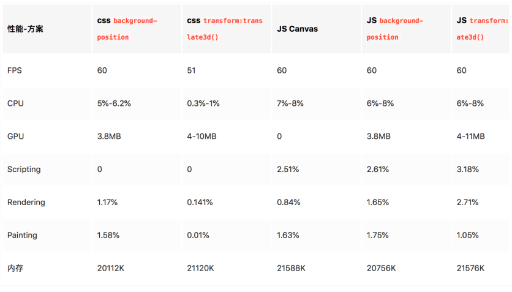

动效实现的方式
- GIF（文件大、有毛边、不可以控制动画）
视频（隐藏控件、自动播放、循环播放）
- Canvas视频组件
- jsmpeg 必须ts格式（修复ios不能自动播放问题）、大小建议2M（因为不能预加载），
- 原生video组件（部分安卓机无法隐藏控件、自动播放等）
CSS Animation（也可以用WebAnimation API操作）
- AE转（bodymovin插件导出---Lottie前端也是转成Canvas或SVG）【从AE到Web 凹凸实验室】
序列帧
- CSS @keyframes background-position
- CSS keyframes transform（推荐）
- Canvas （不断的刷新绘制每一帧）
- SVG（可按照特定路径运动）
图片处理转换工具：gae、apngjs
游戏引擎

问题&注意点
图片、动画数量、动画帧数过多
可能会存在的问题：前边的加载时间过长，动画卡顿、内存、CPU等资源占用过高
解决方式：减少动画数量，低端机降级（可以减少动画数量），滑出屏幕时暂停动画
一些动画需要给到原始的静态图，方便做降级替换
整体算下来，会在25-26个左右
场馆：6 x 3 = 18（小的动效）
其他：3-4 人物走动
版头：视频 / 序列帧 / AE导出
气泡：2（CSS写）
适配方案：rem+scale
rem 的计算会存在误差，因此使用雪碧图时我们并不推荐用 rem。如果是逐帧动画的话，由于计算的误差，会出现抖动的情况。那么在触屏页中，如何实现页面的适配？
- 非逐帧动画部分，使用
rem做单位； - 逐帧动画部分，使用
px做单位，再结合js对动画部分使用scale进行缩放。
帧动画素材的要求
每一帧的图片最好是偶数宽高，偶数张，最好周围能有一些留白（防止抖动）